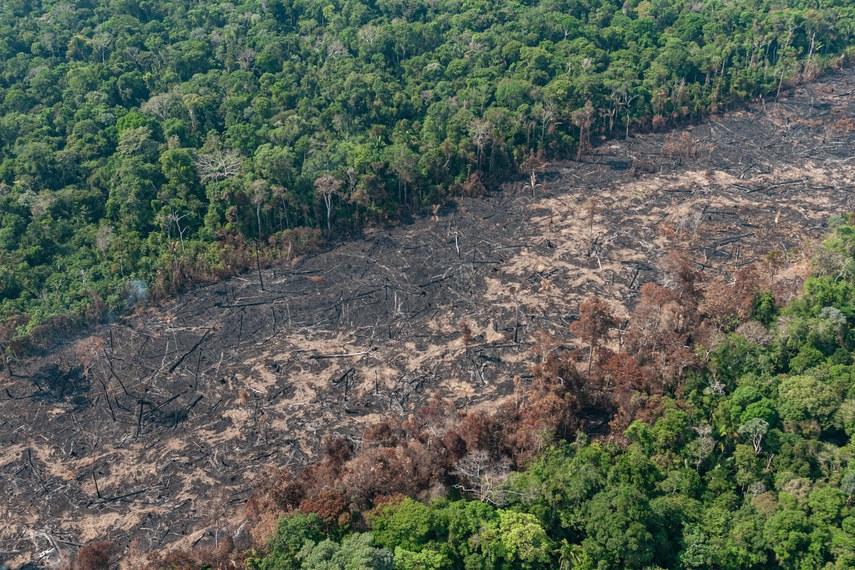
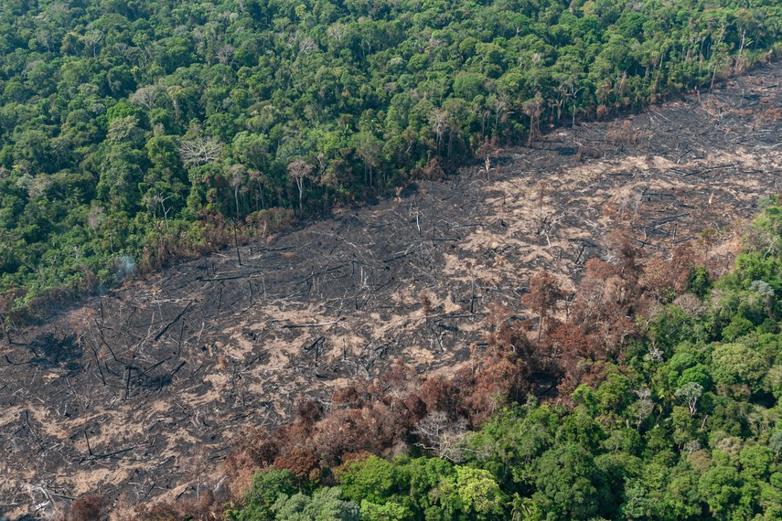

Desmatamento no Brasil: como começou, causas e cenário atual
Entenda como começou o desmatamento no Brasil, quais são as principais causas e as consequências da devastação.
Entenda como começou o desmatamento no Brasil, quais são as principais causas e as consequências da devastação.

O desmatamento no Brasil se deve principalmente à expansão das
fronteiras agrícolas do país, mas as florestas também são
destruídas por outros motivos, como construção de estradas, usinas
hidrelétricas e atividades de mineração.
Esse processo tem causado alguns impactos negativos ao meio
ambiente, levando ao desequilíbrio da biodiversidade brasileira e
à redução da cobertura vegetal do país.
Segundo a pesquisa Contas Econômicas Ambientais da Terra: Contabilidade Física, do IBGE (Instituto Brasileiro de Geografia e Estatística), o Brasil perdeu cerca de 513 mil km² de área verde nos últimos anos, o equivalente a 6% do território nacional.
O desmatamento é a retirada total ou parcial da cobertura vegetal de um local, que impacta a biodiversidade e causa um desequilíbrio ao meio ambiente. Trata-se de um dos principais problemas ambientais enfrentados pelo Brasil.
Embora o país apresente mais de 50% do seu território coberto por florestas, entre 1985 e 2019 cerca de 10% da vegetação nativa deixou de existir.
O Brasil está entre os primeiros na lista dos países que mais desmatam. O desmatamento da Amazônia tem sido o mais preocupante, já que as taxas voltaram a subir nos últimos anos.
As consequências do desmatamento não se restringem ao ambiente, mas também afetam a vida dos seres humanos. Em decorrência do desmatamento pode-se observar a perda da biodiversidade, pois afeta diretamente o habitat de muitas espécies, podendo causar até a extinção.
As mudanças climáticas e o efeito estufa agravam-se com o desmatamento, já que as florestas, por exemplo, fornecem umidade ao ambiente. Também, é possível observar a diminuição do ritmo e frequência de chuvas.
Outro recurso natural afetado com o desmatamento é o solo, pois aumenta-se o processo de erosão, perda de nutrientes e a desertificação.
No Brasil, alguns estados têm se destacado negativamente nesse aspecto, registrando um crescimento preocupante de áreas desmatadas.
Segundo dados do sistema de monitoramento de desmatamento do Instituto Nacional de Pesquisas Espaciais (Inpe), o Pará e o Mato Grosso lideram o ranking dos estados com maior área de floresta desmatada em 2019 e também no acumulado dos últimos 10 anos. O Amazonas e Rondônia também aparecem entre os primeiros colocados.
O desmatamento na Amazônia passou por um período de queda entre 2004 e 2012, devido a uma série de políticas públicas e ações de fiscalização, mas voltou a crescer nos últimos anos. Em 2019, o desmatamento na região amazônica atingiu o maior índice em 11 anos, com um total de 9.762 km² de floresta devastada.
As principais causas do desmatamento no Brasil são a atividade agropecuária, a mineração ilegal, a extração de madeira e a construção de infraestrutura (como estradas e represas). Além de impactar a biodiversidade e o clima, o desmatamento também é responsável pela expulsão de comunidades tradicionais de suas terras e pela degradação da qualidade de vida das populações locais.
Apesar das políticas públicas e medidas de fiscalização, a situação do desmatamento no Brasil ainda é grave e requer atenção e ação imediata dos governantes e da sociedade em geral. E é importante destacar que a preservação das florestas não é apenas uma questão ambiental, mas também econômica e social, uma vez que as florestas secundárias e as áreas remanescentes de vegetação natural são importantes fontes de recursos e serviços ecossistêmicos para as comunidades locais e para a economia como um todo.